stat405
ggplot2 drills, by Garrett Grolemund
Recreate the graphs below by building them up layer by layer with ggplot2 commands.
Airlines data set
Recreate the following plot of flight delays in Texas.

Use
library(maps)
texas <- map_data("state", "texas")
to retrieve the coordinates necessary to make a polygon in the shape of Texas.texas <- map_data("state", "texas") texmap <- c( geom_polygon(data = texas, colour = "grey70", fill = NA), scale_x_continuous("", limits = c(-107, -93)), scale_y_continuous("", limits = c(25.9, 37)) ) ggplot(feb13, aes(long, lat)) + texmap + geom_point(aes(size = ntot, colour = ndelay / ntot)) + geom_text(aes(label = origin), data = subset(feb13, ndelay >= 100), size = 4, hjust = 1.5) + scale_area("total flights", to = c(1, 8)) + scale_colour_gradient("percent delayed")Recreate the following plot of flights cancelled by size of the airport.

ggplot(feb13, aes(ntot, ncancel)) + geom_point(data = subset(feb13, origin == "IAH"), size = 7, colour = alpha("red", 0.5)) + geom_point() + geom_text(data = subset(feb13, origin == "IAH"), aes(label = origin), hjust = -.5) + geom_smooth(method = "lm", se = T) + labs(y = "Number of flights cancelled", x = "Total number of flights")Recreate the following map of flight delays for airports with 100 or more flights on Feb. 13th.
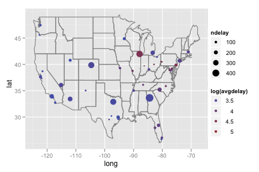lower48 <- subset(feb13, long > -130) lower48 <- subset(lower48, lat > 20) ggplot(subset(lower48, ntot >= 100), aes(long, lat)) + borders("state") + geom_point(aes(size = ndelay, colour = log(avgdelay)))Recreate the following plot of cancellations by longitude.
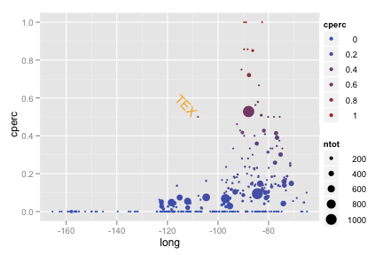ggplot(feb13, aes(long, cperc)) + geom_point(aes(colour = cperc, size = ntot)) + geom_text(data = subset(feb13, cperc > 0.4 & long < -100), aes(label = origin), hjust = 1.2, angle = -45, colour = "orange")Recreate the following plot of flight volume by longitude.
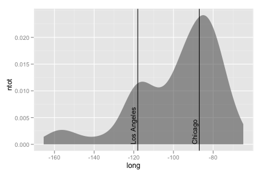Specify
stat = "density"to generate the..density..variable.ggplot(feb13, aes(long, ntot)) + geom_area(aes(y = ..density..), stat = "density", alpha = 0.5) + geom_vline(xintercept = c(-118, -87)) + geom_text(aes(x,y, label = "Los Angeles"), data = data.frame(x = - 119, y = 0), size = 4, hjust = 0, vjust = 0, angle = 90) + geom_text(aes(x,y, label = "Chicago"), data = data.frame(x = -88, y = 0), size = 4, hjust = 0, vjust = 0, angle = 90)Recreate the following chart for the 11 busiest airports.
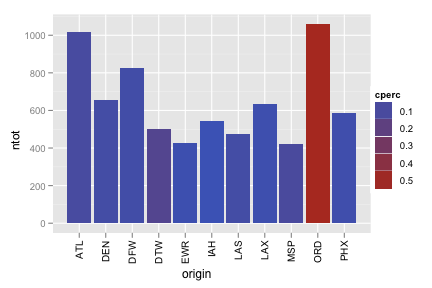Ensure you specified
stringsAsFactors = Fwhen you read in the data set.main <- subset(feb13, ntot > 400) ggplot(main, aes(origin, ntot)) + geom_bar(aes(fill = cperc)) + opts(axis.text.x = theme_text(angle = 90, hjust = 1))
Include the words that appear on the graph.

Start by making the following data set
names <- read.csv("baby-names.csv", header = T, stringsAsFactors = F) class <- c("Rakesh", "Luis", "Yanli", "Yen-yin", "Sarah", "Delma", "Chandra", "Elizabeth", "Kim-chi", "Amanda", "Thomas", "Caroline", "Da", "Christine", "Debra", "Christopher", "Justin", "Lisa", "Meng", "Emilian","Rachel", "Lu", "Casper", "Jingjing", "Chengyong", "Ruo", "Zhongyu") class_names <- subset(names, name %in% class) class_names <- ddply(class_names, c("name", "year"), summarise, percent = sum(percent) / length(percent))ggplot(class_names, aes(year, percent)) + geom_area(aes(group = name, fill = name)) + geom_text(aes(year, percent, label = "*some names did not appear in the dataset"), data = data.frame(year = 1925, percent = 0.10), size = 4)Include the words that appear on the graph.

Use the same data set as above
Consider using
round_any()to make continuous variables discrete.ggplot(class_names, aes(year, percent)) + geom_boxplot(aes(group = round_any(year, 5, floor))) + geom_smooth(se = F, size = 1) + geom_text(aes(year, percent, label = "*blue line is a smoothed mean"), colour = "blue", data = data.frame(year = 1906, percent = 0.029), size = 4) + geom_text(aes(year, percent, label = "Popularity of class names as a group"), data = data.frame(year = 1911, percent = 0.03), size = 4)Create both graphs then comment on the merits of each one compared to the other.


ggplot(diamonds, aes(clarity)) + geom_bar(aes(fill = cut), position = "dodge") ggplot(diamonds, aes(clarity)) + geom_bar(aes(fill = cut)) + facet_grid(cut ~ .)
Recreate the following pie chart.
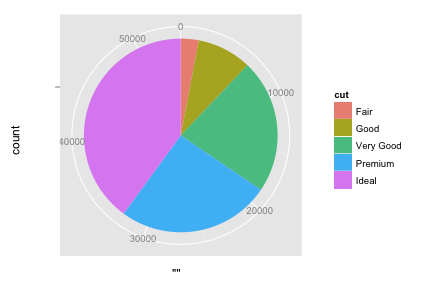To make a bar graph of the whole data set, specify
aes(x = "", ...). What happens to the bar when you switch the x or y axis to polar coordinates?ggplot(diamonds, aes(x = "", fill = cut)) + geom_bar(width = 1) + coord_polar(theta = "y")
Recreate the following density map.
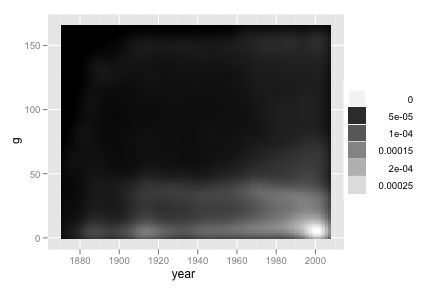Consider
stat_density2d(..., contour = F).ggplot(b, aes(year, g)) + stat_density2d(geom = "tile", aes(fill = ..density..), contour = F) + scale_fill_gradient(low = "black", high = "white")
Recreate the following line graph.
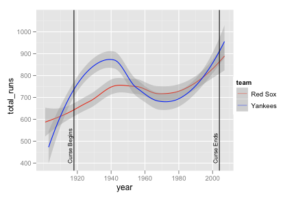yankees <- subset(b, team == "NYA") yankees <- transform(yankees, team = "Yankees") boston <- subset(b, team == "BOS") boston <- transform(boston, team = "Red Sox") yb <- rbind(yankees, boston) yb_runs <- ddply(yb, c("year", "team"), summarise, total_runs = sum(r, na.rm = T))ggplot(yb_runs, aes(year, total_runs)) + geom_smooth(aes(colour = team)) + scale_colour_manual(value = c("red", "blue")) + geom_vline(aes(xintercept = c(1918, 2004))) + geom_text(aes(x,y, label = "Curse Begins"), data = data.frame(x = 1917, y = 400), size = 3, hjust = 0, vjust = 0, angle = 90) + geom_text(aes(x,y, label = "Curse Ends"), data = data.frame(x = 2003, y = 400), size = 3, hjust = 0, vjust = 0, angle = 90)Recreate the following line graph super imposed on the bar chart.
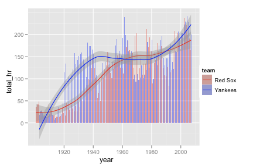yb_homeruns <- ddply(yb, c("year", "team"), summarise, total_hr = sum(hr, na.rm = T)) ggplot(yb_homeruns, aes(year, total_hr)) + geom_bar(aes(fill = team), stat = "identity", position = "dodge") + scale_fill_manual(value = alpha(c("red", "blue"), 0.4)) + geom_smooth(aes(colour = team)) + scale_colour_manual(value = c("red", "blue"))Recreate the following ovelapping areas graph.

Consider
scale_fill_manual().ggplot(yb_homeruns, aes(year, total_hr)) + geom_area(aes(fill = team), position = "identity") + scale_fill_manual(value = alpha(c("red", "blue"), 0.4)) + geom_vline(aes(xintercept = 1918)) + geom_text(aes(x,y, label = "Curse Begins"), data = data.frame(x = 1919, y = -10), size = 3, hjust = 0, vjust = 0)Recreate the following box plots.
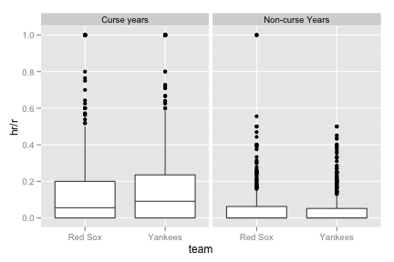yb_curse <- subset(yb, year > 1918 & year <= 2004) yb_curse <- transform(yb_curse, curse = "Curse years") yb_noncurse <- subset(yb, year <= 1918 | year > 2004) yb_noncurse <- transform(yb_noncurse, curse = "Non-curse Years") yb <- rbind(yb_curse, yb_noncurse) ggplot(yb, aes(team, hr / r)) + geom_boxplot() + facet_grid( . ~ curse)
Recreate the following map of countries baseball players have come from.
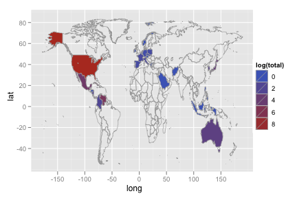library(maps) world_map <- map_data("world") names(world_map)[5] <- "country" p_country <- ddply(p, "country", summarise, total = length(country)) p_map <- merge(p_country, world_map, by = "country", all = T) p_map <- p_map[order(p_map$order), ]ggplot(p_map, aes(long, lat)) + geom_polygon(aes(group = group, fill = log(total)), colour = "grey60", size = .3) + ylim(-55, 85)
Recreate the following chart of the 10 most represented foreign countries in the combined dataset.
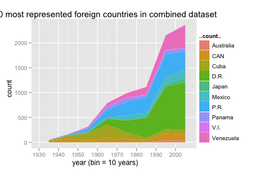Use
stat = "bin"to generate the..count..variable.bp <- merge(b, p, by = "id") bp_country <- ddply(bp, "country", summarise, total = length(country)) bp_country <- bp_country[order(-bp_country$total), ] bp_10 <- subset(bp, country %in% bp_country[2:11, 1]) ggplot(bp_10, aes(year)) + geom_area(aes(y = ..count.., fill = country), stat = "bin", binwidth = 10, position = "stack") + opts(title = "10 most represented foreign countries in combined dataset") + xlab("year (bin = 10 years)")Recreate the side by side bar charts.
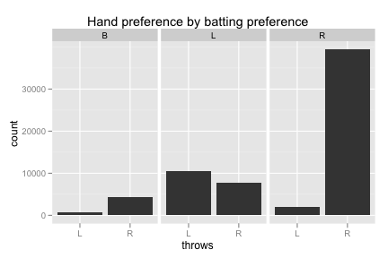bp_trimmed <- subset(bp, bats != "") ggplot(bp_trimmed, aes(throws)) + geom_bar() + facet_grid (. ~ bats) + opts(title = "Hand preference by batting preference")
Recreate the following scatterplot.
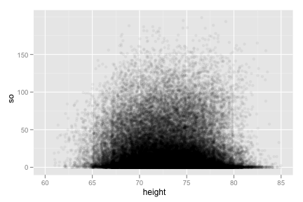ggplot(bp, aes(height, so)) + geom_jitter(position = position_jitter(width = 5), alpha = 0.05) + xlim(60, 85)
Recreate the following comparison of players who have hit more than 60 homeruns in a season.
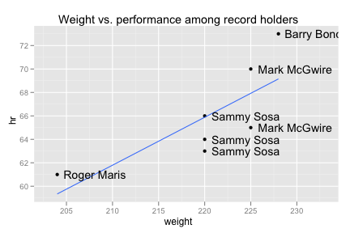ggplot(subset(bp, hr > 60), aes(weight, hr)) + geom_point() + geom_smooth(method = "lm", se = F) + geom_text(aes(label = paste(first, last, sep = " ")), hjust = -0.1) + xlim(203, 233) + opts(title = "Weight vs. performance among record holders")